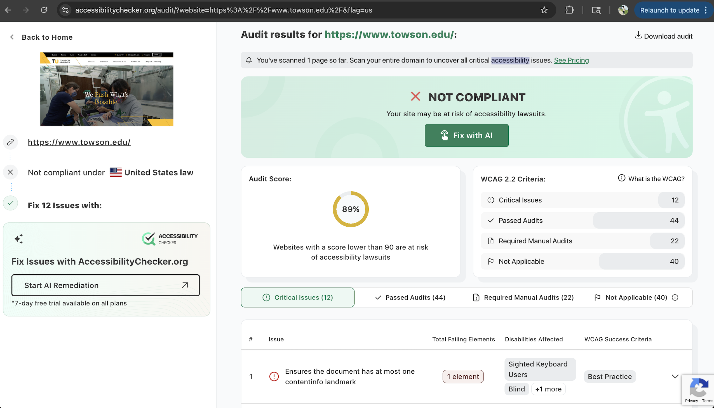

Website URL
What is the Website's Name?
Towson University
Who Is The Site's Target Audience?
The Towson Universitiy site targets students, parents, and people in general who may be interested in attending the college in the future or simply learning more about what the college has to offer.
How Is The Site Organized?
A hierarchical structure is used on Towson's website. Many navigation links are present that lead to other parts of the website.
Which CRAP Design Principles Are Used?
The website prioritizes repetition as the same colors are used all throughout the entire site. It causes one to think of either the website or college when they see the black, yellow, and white together. The website also uses contrast with the text being very easy to read alongside the backgrounds and layouts.
Accessibility Audit Score
The Accessibility Score was 89%. Overall that is a fairly good percentage for a site, though it states that the sie is not compliant. This is because it has 12 critical issues.

What's Is The Site's Effectiveness?
The site has strong effectiveness for users for users to complete actions accurately thanks to its easy navigation system and organized layout.
What Is The Site's Efficiency?
I would consider the site to be very effecient as users can easily locate things and find things without struggling.
How Is The Engagement?
The site is very engaging as it contains colors and pictures of both people and campus that makes the entire college feel more inviting for users to both visit and learn more about.
Recommendation
One recommendation I have is to work on improving the accessbility problems that are present within the audit checker.